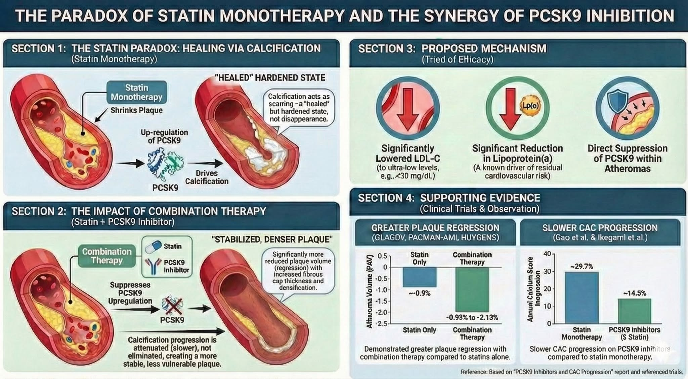

PCSK9 inhibitors can reverse soft plaque, without the accompanying increase in calcification often seen with statins.
Whether this has advantages (or disadvantages) over statins in the long term is still being studied and debated.
Adding a PCSK9 inhibitor to existing statin therapy seems to attenuate the statin-induced calcification.
#cacHD #pcsk9HD #statinsHD #pcsk9cacHD #statinscacHD
PCSK9 Advantage: Shrinking Plaque Without the Calcific Surge
A central objective in cardiovascular prevention is not merely lowering LDL cholesterol, but stabilizing—and ideally reversing—atherosclerotic plaque. For decades, statins have served as the foundation of this strategy. Yet their benefits come with a well-recognized paradox: although statins reduce major adverse cardiovascular events (MACE) and decrease overall plaque burden, they are associated with accelerated coronary artery calcification (CAC).
This phenomenon, often termed the “Statin Paradox,” reflects a shift in plaque composition rather than treatment failure. As lipid-rich, inflamed plaques regress, they frequently transition into denser, calcified structures. While this calcification may confer mechanical stability, it complicates imaging interpretation and raises questions about long-term vascular trajectory.
Emerging evidence from intravascular imaging and coronary CT angiography now suggests that PCSK9 inhibitors (PCSK9i) follow a different—and potentially superior—biological trajectory. Across multiple studies, these agents achieve substantial plaque regression without provoking the pronounced calcific surge typically seen with statins, and in some cases meaningfully slow the progression of coronary calcium itself.
1. The Statin Context: Regression via Densification
Statins reduce LDL-C and suppress plaque inflammation, leading to depletion of the lipid core. As inflammatory activity resolves, residual plaque tissue often undergoes calcification. This process stabilizes vulnerable lesions by converting soft, rupture-prone plaques into more inert structures.
Clinically, however, this creates a paradoxical scenario: patients demonstrate improved lipid profiles and reduced cardiovascular risk, yet exhibit rising CAC scores and increased dense calcium volume on imaging. While not inherently harmful, this pattern complicates risk assessment and underscores the limits of calcification-based metrics in treated patients.
2. The PCSK9-I Advantage: Regression Without a Calcification Surge
Randomized controlled trials indicate that PCSK9 inhibitors promote plaque regression through mechanisms that are qualitatively distinct from statins alone.
Robust Plaque Volume Reduction
In the GLAGOV trial, the addition of evolocumab to background statin therapy reduced median LDL-C to 36.6 mg/dL and produced significant regression in percent atheroma volume (−0.95%), compared with slight progression in the placebo group (+0.05%).
The Absent Calcification Spike
Critically, this regression was not accompanied by a significant increase in dense calcium volume. Changes in calcified plaque were small and statistically indistinguishable from placebo.
This finding was reinforced in PACMAN-AMI, where alirocumab-treated patients demonstrated “triple regression”—reduced plaque volume, diminished lipid core, and increased fibrous cap thickness—yet showed no meaningful increase in calcified plaque compared with controls.
Key insight: PCSK9 inhibitors appear capable of removing plaque mass without forcing lesions into a calcified end state.
3. Slowing Plaque Hardening: Attenuated CAC Progression
Beyond the absence of a calcification surge, several studies suggest that PCSK9 inhibitors may actively slow calcium accumulation:
- Gao et al. (2022): Patients receiving alirocumab exhibited a CAC increase of only 2.9%, compared with 10.6% in those treated with statins alone.
- Ikegami et al. (2018): Annual CAC progression was nearly halved with PCSK9 inhibitor therapy (14.3% per year) versus statin monotherapy (29.7% per year).
These findings challenge the assumption that accelerated calcification is an unavoidable consequence of intensive lipid lowering.
4. Mechanistic Explanations for “Cleaner” Regression
Several complementary mechanisms likely explain this favorable non-calcific profile:
- Profound LDL-C Lowering: Achieving ultra-low LDL levels (<30–40 mg/dL) may facilitate true lipid clearance rather than stabilization via calcification.
- Lipoprotein(a) Reduction: Unlike statins, PCSK9 inhibitors significantly lower Lp(a), a potent driver of vascular inflammation and calcification. Reductions in Lp(a) have been closely linked to fibrous cap thickening and slower CAC progression.
- Direct Plaque Effects: Evidence suggests local suppression of PCSK9 activity within atheromas, shifting plaque remodeling toward fibrous stabilization rather than mineral deposition.
Conclusion
PCSK9 inhibitors have reshaped our understanding of plaque healing. Whereas statins stabilize atherosclerosis largely through calcific transformation, PCSK9 inhibition appears to enable a more refined form of regression—one that reduces plaque burden, strengthens fibrous caps, and mitigates lipid-driven risk without relying heavily on calcium deposition.
This represents a fundamentally “cleaner” mode of vascular repair: lipid removal and structural stabilization without the calcific penalty. As imaging-based endpoints continue to evolve, PCSK9 inhibitors may redefine what true plaque regression looks like in modern cardiovascular prevention.
References:
docs.google.comGoogle Docdocs.google.com